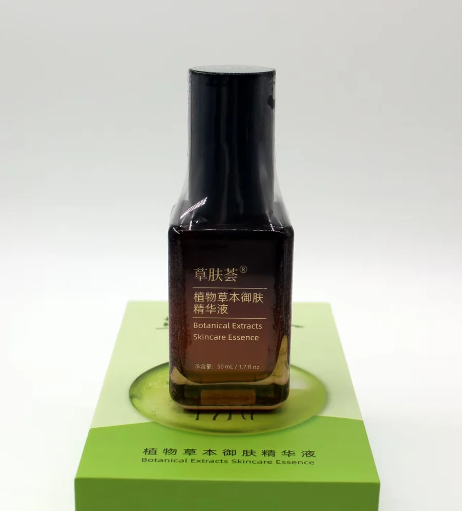
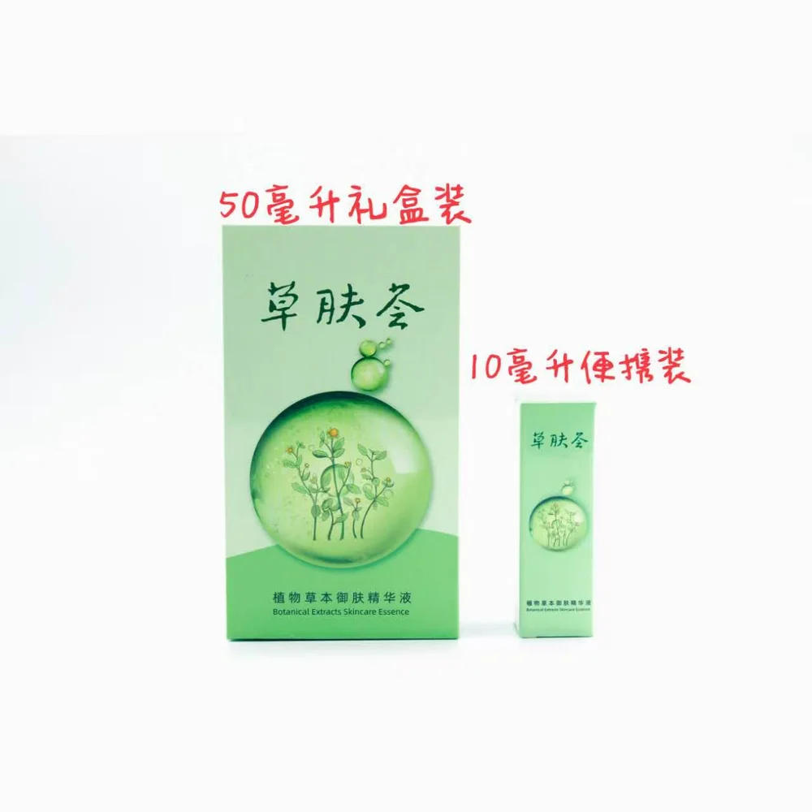
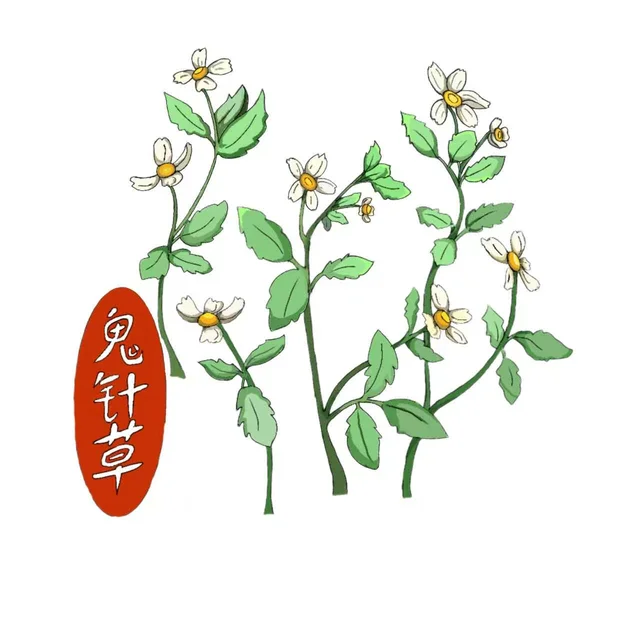
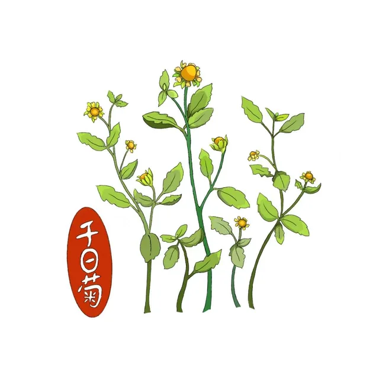
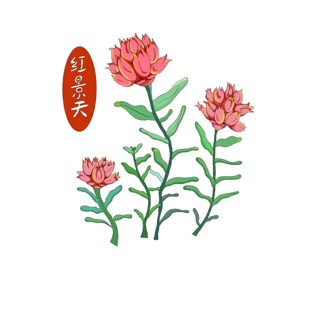

植物有名字，成分有来处
从一株植物，
读懂一瓶精华。
跟随三种草本，走进草肤荟的配方。
把陌生的成分名，读成清楚的日常知识。
以植物为本，立自研之根，守肌肤之美。引自品牌包装资料

植物草本御肤精华液50 mL
一份配方，
三种读法。
01 / THE ESSENCE
先认识，这一瓶。
一款精华，两种规格。
先看实物，再打开它的配方。

植物草本
御肤精华液
Botanical Extracts Skincare Essence
琥珀色瓶身，植物绿包装。除了外观，瓶身上的名称、规格和使用说明，也是认识产品的起点。
使用方式 根据品牌信与瓶身说明整理
- 01按压取用
拔开瓶盖，按压泵头取适量精华。
- 02涂抹，静候吸收
均匀涂抹于面部；品牌信建议无需拍打。
- 03按说明使用
瓶身建议早晚各一次，具体以实物包装为准。
02 / THE HERBARIUM
在配方里，遇见植物。
三个植物名字，三条探索线索。
轻点插画，看它与配方的联系。

三叶鬼针草
插画标注为「鬼针草」，配方记录使用「三叶鬼针草提取物」。从植物名，找到成分表里的对应项。

千日菊
一朵黄色小花，也有一个专业的配方名称。点击卡片，看千日菊如何出现在这瓶精华的成分表中。

红景天
包装插画之外，还有值得读懂的名字。红景天提取物，出现在这份配方记录的第 9 项。
ILLUSTRATIONS FROM BRAND MATERIALS插画为草肤荟公众号发布的品牌视觉素材，用于关联名称，不作为植物鉴定依据。
03 / INGREDIENT NOTES
名字很专业，
解释可以很简单。
从熟悉的泛醇，到名字很长的依克多因。
选一项，读懂名称、角色与出处。
02保湿剂 · 溶剂丁二醇Butylene Glycol
读到「醇」字，不必马上联想到酒精。丁二醇是另一种物质，常在化妆品中承担保湿和溶剂角色。
这里解释的是成分的一般用途。不能从名称判断本配方中它的具体浓度、来源工艺或最终使用效果。
S04 · COSMILE Europe：Butylene Glycol ↗03植物提取物三叶鬼针草提取物Bidens Pilosa Extract
植物的名字与成分的名字，只差了「提取物」三个字。它说明这项原料与三叶鬼针草有关，并不表示把整株植物直接放进瓶子。
中文名称、拉丁名和序位来自草肤荟公众号发布的配方记录。资料没有给出提取部位、提取工艺或浓度，本页不作补充推断。
S01 · 草肤荟公众号发布的配方记录与包装照片 ↗04依克多因 · 皮肤调理四氢甲基嘧啶羧酸Ectoin
长名字，也可以有熟悉的叫法。四氢甲基嘧啶羧酸常被称为「依克多因」，英文名称是 Ectoin。
COSMILE Europe 将 Ectoin 归为皮肤调理成分。这是成分分类，不是这瓶精华的修护或人群适用性检测结果。
S05 · COSMILE Europe：Ectoin ↗05植物提取物千日菊提取物Acmella Oleracea Extract
从插画里的千日菊，到成分表里的 Acmella Oleracea Extract，中文名与拉丁名构成了一组可以相互核对的线索。
配方记录确认了名称和第 5 项的位置。插画为草肤荟公众号发布的品牌视觉素材，并非植物鉴定图；不据此推导提取部位或产品功效。
S01 · 草肤荟公众号发布的配方记录与包装照片 ↗08维生素 B5 前体泛醇Panthenol
常听到的「B5」与它有关。泛醇属于维生素 B5 的前体，常被称作「维生素原 B5」，不宜直接把两者画等号。
名称关系和分类参考 COSMILE Europe。该资料讲的是原料，不提供草肤荟产品的人体功效或安全性结论。
S06 · COSMILE Europe：Panthenol ↗09植物提取物红景天提取物Rhodiola Rosea Extract
红景天是植物名，「红景天提取物」是这里的配方名称。把两者对应起来，是读懂草本成分表的第一步。
第 9 项表示本份记录中的列示位置，不是含量百分比。未提供提取部位、工艺与浓度；不把植物相关研究当作本产品效果。
S01 · 草肤荟公众号发布的配方记录与包装照片 ↗12透明质酸的钠盐透明质酸钠Sodium Hyaluronate
这是透明质酸的钠盐。理解「钠」这个后缀，能把常见的护肤词汇和成分表上的正式名称联系起来。
COSMILE Europe 收录了它的保湿和皮肤调理功能。最终产品的使用感受和效果还受到整体配方等因素影响。
S07 · COSMILE Europe：Sodium Hyaluronate ↗13溶剂 · 皮肤调理1,2-己二醇1,2-Hexanediol
一项原料可以有不止一个配方角色。1,2-己二醇可用作溶剂和皮肤调理成分；了解一般用途，比单看名字判断好坏更有帮助。
COSMILE Europe 提供一般功能分类。配方第 14 项还列有对羟基苯乙酮，但仅凭这两个名称，不能确认本产品的完整防腐体系、稳定性或安全性。
S08 · COSMILE Europe：1,2-Hexanediol ↗序号对应下方配方记录的位置；成分的一般用途不等于这款产品的实测效果。
THE FORMULA / 配方原貌
每一个名字，都有位置。
沿用草肤荟公众号发布配方记录的 16 项顺序。点击名称查看详情；序位不能换算为浓度。
完整成分记录 16 项 + 17 项其他微量成分
成分
水、丁二醇、三叶鬼针草（BIDENS PILOSA）提取物、四氢甲基嘧啶羧酸、千日菊（ACMELLA OLERACEA）提取物、麦角硫因、α-熊果苷、泛醇、红景天（RHODIOLA ROSEA）提取物、松口蘑（TRICHOLOMA MATSUTAKE）提取物、白松露菌（TUBER MAGNATUM）提取物、透明质酸钠、1,2-己二醇、对羟基苯乙酮、甘草酸二钾、银耳（TREMELLA FUCIFORMIS）提取物。
其他微量成分
黄芩（SCUTELLARIA BAICALENSIS）根提取物、黑孢块菌（TUBER MELANOSPORUM）提取物、麦冬（OPHIOPOGON JAPONICUS）根提取物、薰衣草（LAVANDULA ANGUSTIFOLIA）花提取物、姜黄（CURCUMA LONGA）根提取物、精氨酸、葡萄柚（CITRUS PARADISI）果提取物、柑橘（CITRUS RETICULATA）果提取物、绣球菌（SPARASSIS CRISPA）提取物、冬虫夏草（CORDYCEPS SINENSIS）提取物、矢车菊（CENTAUREA CYANUS）花提取物、栀子（GARDENIA FLORIDA）提取物、桂花（OSMANTHUS FRAGRANS）花提取物、拟石花菜（GELIDIELLA ACEROSA）提取物、玫瑰（ROSA RUGOSA）花提取物、檀香（SANTALUM ALBUM）木提取物、尿囊素。
S01 · 根据现有配方资料整理，保留成分分组；产品信息以实物标签为准。
对照包装照片04 / SOURCES & CONTEXT
好奇，也有据可循。
把品牌资料和成分知识分别注明。
知道信息从哪里来，也知道它说明到哪里。
先读名字，
再看角色，
最后找出处。
本馆介绍配方信息与成分的一般用途。未提供本产品的功效试验或稳定性测试数据，不能据此判断个人使用效果。
资料整理 / 2026.10.29S01—03 产品与图片资料
S01 · 配方与包装 草肤荟公众号于 2026-10-28 发布的产品资料、精华液正背面与礼盒照片。成分分组照录，规格来自图片。
S02 · 品牌信 《致草肤荟用户的一封信》。仅摘取产品操作说明及有归因的品牌自述。
S03 · 素材使用说明 草肤荟公众号发布的素材使用意见说明照片可以使用及裁剪；本项目按课程展示用途使用。植物图取自草肤荟公众号发布的三张插画。
查看包装照片 ↗S04—08 成分解码参考
一般功能与名称对照参考 COSMILE Europe 成分数据库。数据库条目不代表对本产品的审批、检测或功效认可。查阅日期：2026-10-29。
ABOUT 关于这个探索馆
“草肤荟·成分探索馆”是课程设计作品，以“植物 → 成分”和“成分 → 配方”两条路径组织信息。采用文字标排版，非品牌官方 Logo。
这里通过植物图鉴、成分解码和 3D 产品展示，连接植物名称与配方信息。产品照片与植物插画来自课程提供的品牌素材。
本项目非品牌官方运营网站，仅作课程展示，不提供购买或个性化护肤建议。
每一次读懂，都从好奇开始。
再去认识一株植物